تحچي، وراوي يسوّي المونتاج.
إضافة عربية لـ After Effects و Premiere Pro تسمع الفيديو وتركّب فوقه العناوين والقوائم والكابشن والانتقالات والأصوات بضغطة وحدة. وكل عنصر يبقى طبقة وحدة تتعدل من التايم لاين.
التجربة يومين مجاناً وبيها كل الأدوات. تطلبها من داخل الإضافة بضغطة، والكود يتفعّل تلقائياً.
في سوريا؟ اطلب من متجر القناصكل أداة طبقة بالتايم لاين
ثمان أدوات بمكان واحد. كلها تشتغل فوق فيديوك الحقيقي، وكل شي يرجع بـ Ctrl+Z.
Auto Editيفرّغ الكلام ويفهمه ويركّب المونتاج كامل فوق الفيديو: عنوان بالبداية، قوائم لما الشخص يعدّد، أرقام كبيرة، كلمات مميزة بزجاج أو تمييز، زووم، انتقالات بالوقفات، كابشن، ودعوة للتواصل بالنهاية، ويا أصوات لكل عنصر. يحدد مكان الوجه ويحط العناصر بالمكان الفاضي ضمن السيف زون.
Silence Cutتحدد طبقة الفيديو، وراوي يسمع صوتها ويلگى السكتات، وبضغطة يقطّعها ويرتب القطع ورا بعض. وإذا تريد، زووم خفيف يتبدل بكل قصة.
Caption Studioطريقة الكابشن الجديدة: تدخل للكابشن وتنفتح صفحة كاملة، تشوف بيها الكابشن على فريم من فيديوك مثل ما راح يطلع بالضبط، وكل تعديل يبين مباشر. الكلمات تطلع بطاقات: ضغطة تخليها كلمة مميزة، دبل كلك تعدّلها، وتسحبها حتى ترتبها أو تدمجها. التوقيت على الكلام الحقيقي كلمة بكلمة، والتفريغ يصير على جهازك ويفهم اللهجة العراقية.
Hooksأول ثواني الفيديو هي اللي تمسك المشاهد. دائرة حمرا تطلع ورا المتحدث والعنوان ينكتب كلمة كلمة والكاميرا تدخل بزووم واهتزاز، أو كلمات تنزل جنب المتحدث وبعدها الكاميرا تقرّب على العيون والاسم ينكتب حرف حرف.
High Attentionمشاهد ريلز تشد الانتباه: صور مقصوصة تدخل بسرعة وتهدأ، كلمات كبيرة، بطاقات معلّقة بحبل، ساعة رملية، وقطع بأقصى سرعة بين اللقطات.
Carouselتختار صورك وفيديواتك وراوي يرتبها بكاروسيل متحرك. التعديلات جنب المعاينة، فتشوف التغيير وإنت تعدّل.
Faceless Scenesمشاهد كاملة تغطي الفيديو لما ما تريد الشخص يبين: 3D (وقت، فلوس، أيقونات)، نيون، منتج واقعي، مجسّم، كولاج واقعي وتراثي، ملاحظة مثبّتة، وكلمات تنط. تبدّل الصورة بصورة منتجك وتحرّكها وتكبّرها براحتك.
Libraryنصوص متحركة، ستايل ترند وبكسل ونعناعي، زجاج سائل ومضلّع ومصنفر، أيقونات زجاجية و3D، نص 3D، بطاقات سوشيال، إشارات مدارية، انتقالات وحركة كاميرا، ومكتبة أصوات وموسيقى.
راوي صار على البريمير
نفس راوي ونفس كود التفعيل. إذا مفعّل بالأفترافكت، يشتغل بالبريمير على نفس الجهاز بدون تفعيل ثاني.
نصوص متحركة، زجاج سائل ومصنفر، أيقونات، ستايل ترند، نيون وفيسلس. تضغط على العنصر وينزل بمكان المؤشر بالتايم لاين.
النص والخط والألوان والحجم والحركة بمجلدات مرتبة، وتسحب الفيديو على خلفية الزجاج حتى يتغبّش وراه.
١٢٨ انتقال بأسماء عربية وانتقالات راوي، ومنحنيات الحركة على الفريمات، وأصوات لكل عنصر.
تعاين قبل ما تدرج، وتعدّل بعده
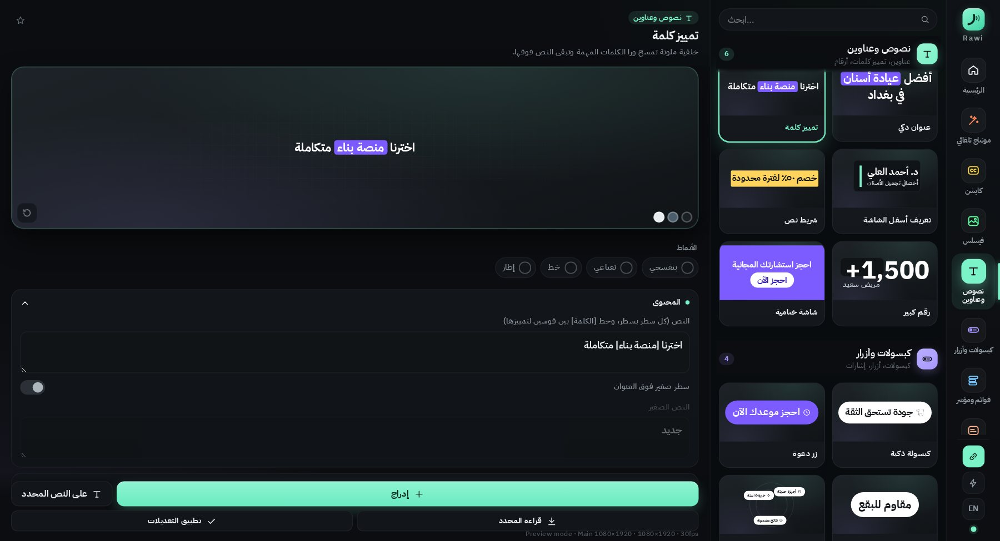
شوف راوي يشتغل
شروحات من قناة راوي على يوتيوب: من أول مونتاج لحد آخر تحديث.
 23:04شرح كاملشرح إضافة راوي للمونتاج
23:04شرح كاملشرح إضافة راوي للمونتاج
 15:48مونتاج كاملشلون تسوي مونتاج ترند بـ 15 دقيقة
15:48مونتاج كاملشلون تسوي مونتاج ترند بـ 15 دقيقة
 12:50Premiere Proستايل المونتاج الجديد بـ 10 دقائق على البريمير
12:50Premiere Proستايل المونتاج الجديد بـ 10 دقائق على البريمير
 10:49تحديثتحديث 1.15.1: قسم الهوكات وستايل الانتباه العالي
10:49تحديثتحديث 1.15.1: قسم الهوكات وستايل الانتباه العالي
 11:32تحديثتحديث 1.14: عناصر جديدة وقص السكتات بضغطة
11:32تحديثتحديث 1.14: عناصر جديدة وقص السكتات بضغطة
 3:01Premiere Proتجربة راوي على البريمير
3:01Premiere Proتجربة راوي على البريمير
شنو يگولون اللي جرّبوه
آراء حقيقية من رسائل وردود متابعي راوي على انستغرام، مثل ما وصلتنا.
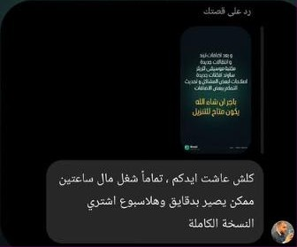
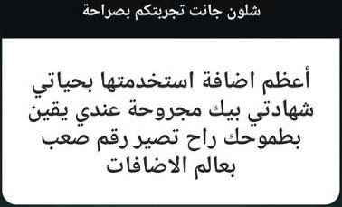
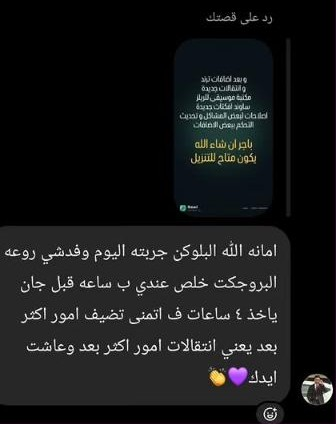
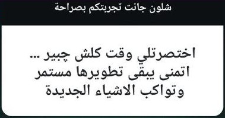
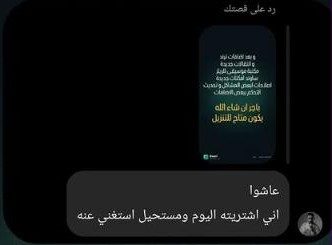
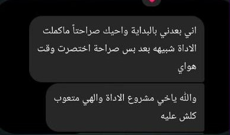
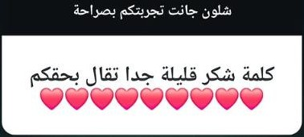
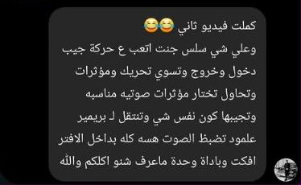
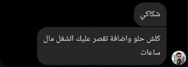
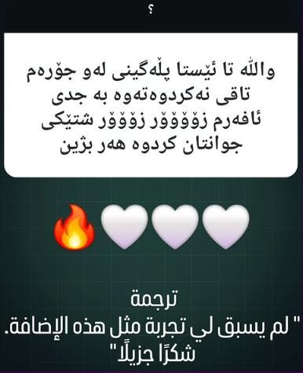
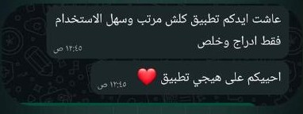
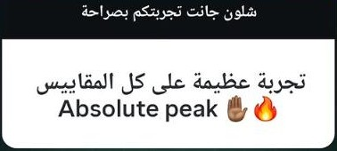
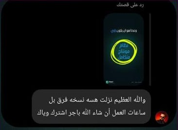
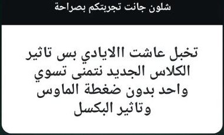
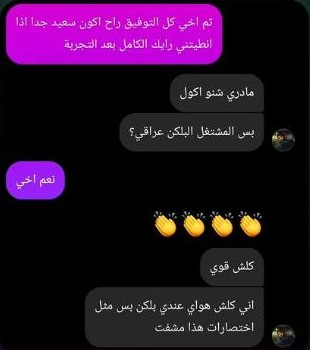
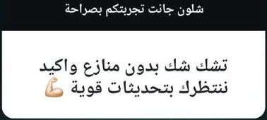
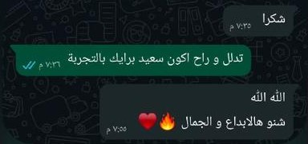
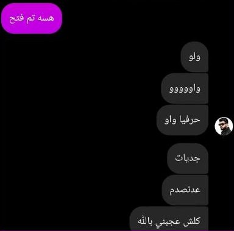
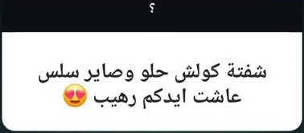
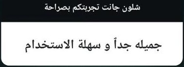
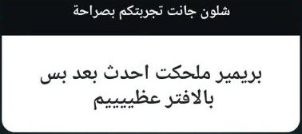
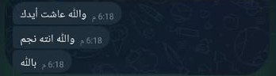
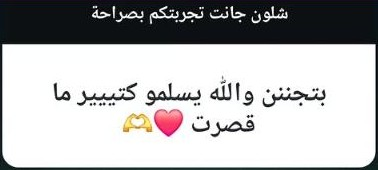
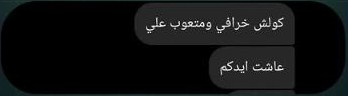
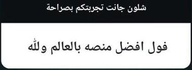
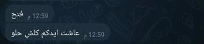
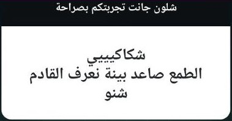
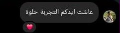
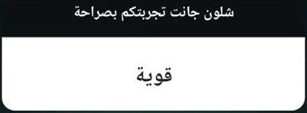
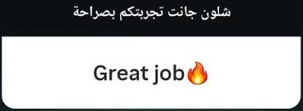
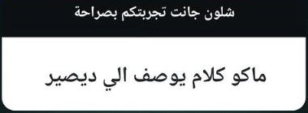
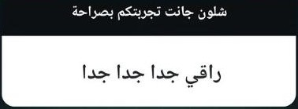
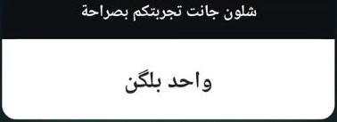
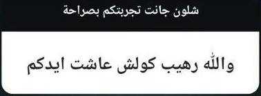
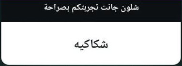
حمّل راوي وثبّته بنفسك
التحميل مجاني. الإضافة تشتغل بعد ما تفعّلها بكود تجربة أو كود النسخة الكاملة.
راوي لـ After Effects و Premiere Pro
Windows protected your PC اضغط More info وبعدها Run anyway. تطلع لأن الملف جديد ومو موقّع بعد، وهو آمن.- سكّر After Effects و Premiere Pro وافتح الملف اللي حمّلته، وبداخله دبل كلك على Rawi-Setup.exe.
- افتح After Effects أو Premiere Pro ومن القائمة Window › Extensions › Rawi
- اضغط «اطلب تجربة يومين» بشاشة التفعيل، والتجربة تتفعّل خلال ثواني.
- للنسخة الكاملة: اشترِ من المتجر، وبعدها اضغط «دفعت؟ فعّل النسخة الكاملة» واكتب رقم الطلب.
شوف طريقة التثبيت
فيديو قصير خطوة بخطوة: من التحميل لحد ما تتفعّل التجربة.
طريقة التحديث
عندك راوي من قبل؟ حدّثه لآخر نسخة بدقيقة، والتفعيل ومشاريعك تبقى مثل ما هي.
- سكّر After Effects و Premiere Pro.
- حمّل التحديث من صفحة التحميل، وافتح ملف Rawi-Setup.zip ودبل كلك على Rawi-Setup.exe.
- ثبّت فوق القديم، ما تحتاج تحذف النسخة القديمة. إذا طلعت رسالة
Windows protected your PCاضغطMore infoوبعدهاRun anyway. - افتح راوي من Window › Extensions › Rawi وتلگاه محدّث والتفعيل مثل ما هو.
- من نسخة 1.15.1 وطالع ما تحتاج تحمّل: إذا اكو نسخة جديدة يطلعلك زر «حدّث الآن» داخل راوي.
- سكّر After Effects و Premiere Pro (⌘ Q).
- افتح Terminal: اضغط ⌘ + Space واكتب Terminal.
- الصق هذا السطر وحده واضغط Enter:
curl -fsSL https://rawiplugin.com/mac-update.sh | bash - إذا طلب باسورد اكتب باسورد الماك واضغط Enter. الحروف ما تبين وإنت تكتب، وهذا طبيعي.
- افتح راوي من Window › Extensions › Rawi وتلگاه محدّث والتفعيل مثل ما هو.
شلون تحصل راوي
كل نسخة ترتبط بجهاز واحد. كلشي يصير من داخل الإضافة، وما تحتاج تراسل أحد.
حمّل ملف التثبيت من هذي الصفحة وثبّته، وافتح راوي من After Effects أو Premiere Pro.
من شاشة التفعيل اضغط «اطلب تجربة يومين»، والتجربة تتفعّل خلال ثواني. التجربة مرة وحدة لكل جهاز.
K7Q2M-9XA4Pادفع من متجر راوي، وبعدها بنفس الشاشة اضغط «دفعت؟ فعّل النسخة الكاملة» واكتب رقم الطلب. تتفعّل خلال دقايق بدون ما تراسل أحد.
شهري، سنوي، أو مدى الحياة
- المونتاج التلقائي وقص السكتات
- استوديو الكابشن بـ ١٦ ستايل متحرك
- هوكات وستايل الانتباه العالي
- كاروسيل متحرك بـ ١٢ شكل
- فيسلس وفيسلس 3D
- زجاج سائل ومضلّع ومصنفر
- Rawi Glow وتأثيرات راوي الخاصة
- +٢٨٠ عنصر موشن و +٢٥٠ مؤثر صوتي وموسيقى
- After Effects و Premiere Pro بنفس الكود
إذا كنت في سوريا، اطلب من متجر القناص
للطلب في سوريا عبر متجر القناص: نفس الاشتراكات (شهر، سنة، مدى الحياة)، والدفع عن طريق المتجر.
أسئلة تتكرر
من وين أحمّل الإضافة؟
من زر «تحميل لويندوز» بهذي الصفحة. التحميل مجاني، وبعد التثبيت تطلب التجربة أو تفعّل النسخة الكاملة من داخل الإضافة.
على شنو يشتغل؟
على After Effects (2022 أو أحدث) و Premiere Pro (2025 أو أحدث)، بالويندوز والماك. كل الأدوات تشتغل على الاثنين، ومنها الكابشن التلقائي.
شلون أحدّث راوي على الماك؟
سكّر After Effects و Premiere Pro، وانسخ سطر التحديث من صفحة التحميل والصقه بالـ Terminal. ينزّل بس الملفات اللي تغيّرت ويثبّتها مكان القديمة، والتفعيل يبقى. على الويندوز: حمّل ملف التثبيت الجديد وثبّته فوق القديم.
أحتاج كود ثاني للبريمير؟
لا. نفس كود راوي يشغّل الأفترافكت والبريمير على نفس الجهاز. وإذا عندك راوي من قبل، البريمير يجيك ويا التحديث بدون ما تدفع شي.
الكابشن يحتاج نت؟
التفريغ يصير على جهازك. محرك التفريغ يتحمّل مرة وحدة أول ما تستخدم الكابشن، وبعدها يشتغل بدون نت.
الكود يشتغل على كم جهاز؟
كل كود لجهاز واحد، ويرتبط برقم الجهاز اللي يطلع بشاشة التفعيل. إذا تحتاج جهاز ثاني راسلنا بالتليغرام.
شنو بيها التجربة؟
كل الأدوات بدون استثناء لمدة يومين، ومرة وحدة لكل جهاز. بعد ما تخلص تگدر تشتري النسخة الكاملة وتفعّلها بنفس الشاشة.
المونتاج التلقائي يقص الفيديو؟
لا. يضيف العناصر فوق الفيديو بس، والمقطع الأصلي يبقى مثل ما هو. وكل المونتاج ينشال بـ Ctrl+Z وحدة.
شلون أدفع؟
من متجر راوي بالدفع الإلكتروني: اختار شهري ($10 = 15,000 د.ع)، سنوي ($25 = 35,000 د.ع) أو مدى الحياة ($55 = 75,000 د.ع). بعد الدفع افتح راوي واضغط «دفعت؟ فعّل النسخة الكاملة» واكتب رقم الطلب أو رقم الهاتف اللي دفعت بيه، وتتفعّل النسخة الكاملة خلال دقايق. وإذا إنت بسوريا اطلب من متجر القناص.
شنو يصير من يخلص الاشتراك؟
راوي يرجع لشاشة التفعيل. تجدد من المتجر وتفعّل بنفس الطريقة: «دفعت؟ فعّل النسخة الكاملة» ورقم الطلب الجديد.
تحتاج مساعدة؟
التجربة والشراء والتفعيل كلها تصير من داخل راوي: اطلب تجربة يومين من شاشة التفعيل، أو اشترِ من المتجر واضغط «دفعت؟ فعّل النسخة الكاملة»، والكود يتفعّل لحاله. إذا واجهتك مشكلة أو عندك سؤال، راسلنا بالتليغرام.